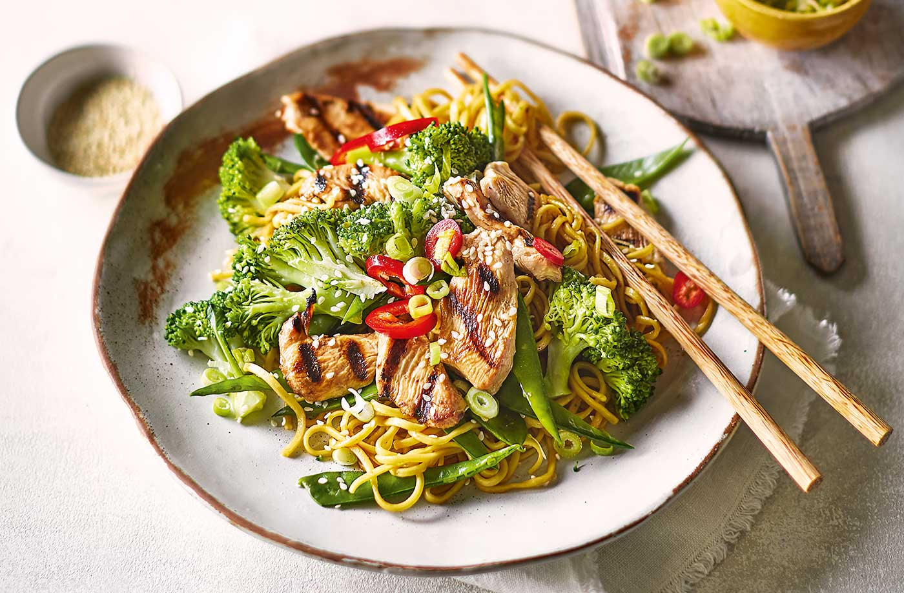

Chicken Teriyaki Noodle Recipe

Description
This classic chicken teriyaki noodle dish is a superb dish. Adjust the spice level to each individual taste preference.
Ingredients
- Noodles
- Chicken 200g
- Onions - 2 medium sized, finely chopped
- Teriyaki sauce
- Broccoli
- Egg - 1 boiled
- Beans
Method
- Cook noodles
- Cook vegetables
- Cook chicken
- Add teriyaki sauce